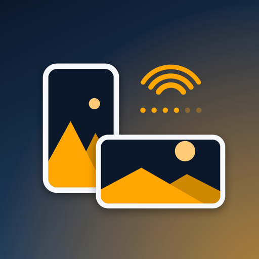

Слева большой размер, справа реальные: 180 px — домашний экран iPhone, 120 и 87 — уведомления и настройки, 60 — Spotlight. Судить стоит по правой части: именно так её видят.
Важно про 1.3. Иконка живёт в бинарнике — отдельно в App Store Connect её не загрузить. Поменять её в версии 1.3, которая уже стоит в очереди на ревью, можно только так: отменить сабмишен, собрать билд 13, прикрепить, отправить заново. Место в очереди при этом теряется. Если не менять — иконка поедет в 1.4.
Сейчас в проекте установлен вариант 02, «Два устройства».

Если коротко. 03 отпадает. Между 02 и 04 выбор не про красоту, а про то, что важнее: 02 объясняет приложение и выигрывает в App Store, где иконка большая; 04 надёжнее на домашнем экране и в поиске, где её и находят каждый день.
Обе собираются одним скриптом:
swift scripts/generate_icon.swift out.png devices|symbol|symbolWarm.